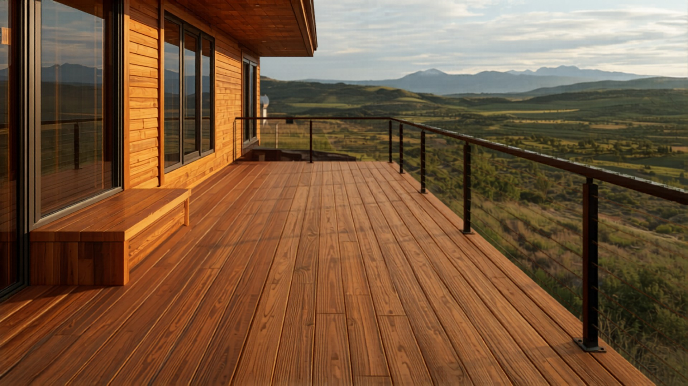

Exterior Remodels in Steamboat Springs
Decks, siding, roofing, windows, doors, and weatherproofing — built for real snow load, freeze-thaw, and the way water and ice move at altitude. A written scope before demo, a photo update every working day, and the owner on every job.
Call or text 970-393-6239Photos of your space welcome · 30-minute response, Mon–Fri
Serving Steamboat Springs and the Yampa Valley · Written proposal within 48 hours of your walkthrough · Owner-run, licensed and insured in Colorado.

Out here, the exterior is the whole ballgame
Snow load, ice dams, and a freeze-thaw cycle that pries apart lesser work — miss one detail and you're rebuilding in three winters instead of thirty. We build exteriors to what the mountains actually require, not to flatland specs.
What we remodel outside
Six exterior work-types, each built for snow load, freeze-thaw, and altitude UV. Open the full page for any one of them.
Roofing
Full tear-off and replacement plus repairs — torn off to a sound deck, then built with the layers a mountain roof actually lives on.
- Ice-and-water shield at eaves, valleys, and penetrations
- Architectural asphalt or standing-seam metal, chosen for how the roof sheds snow
- Class-A assembly where the mapped parcel and adopted code require it
Bronze Metal Roofing
The signature mountain-modern roof — dark-bronze standing-seam that sheds snow and outlasts asphalt at altitude.
- High-temp ice-and-water underlayment under the whole field
- Flashing detailed at valleys, sidewalls, and penetrations
- Color-matched snow retention placed where sliding snow should land
Siding
Replacement and repair that keeps water out, holds heat in, and meets fire code where the parcel requires it — over a continuous weather barrier, not just housewrap.
- Weather barrier and lapped flashing behind the cladding
- Ignition-resistant assemblies where the mapped parcel requires it
- The chance to add continuous exterior insulation in Climate Zone 7B
Decks
New decks and rebuilds engineered to verified snow load, with footings to frost depth and water kept off the house.
- Footings to the countywide frost depth so posts don't heave
- Joists, beams, and posts sized to your parcel's verified snow load
- Ledger lag-bolted into framing and flashed so water sheds outward
Windows & Doors
Replacement built for the climate — units rated for the cold, flashed and sealed so water never gets behind them.
- Low U-factor glazing spec'd to Zone 7B — usually triple-pane up here
- Frame matched to altitude — vinyl, fiberglass, or wood-clad
- Flashed sill-pan first, then jambs, then head — and air-sealed inside
Weatherproofing
Sealing the envelope: flashing, drainage, grading, and water management so meltwater moves away from the home as one system.
- Flashing at every seam — windows, doors, rooflines, decks, and material changes
- Grading and perimeter drains that route snowmelt off the foundation
- Air sealing that stops escaping heat, sneaking cold, and condensation
The details that make it look right
The structure keeps you safe; the finishes are what you see every day. We carry the same written-scope discipline through the parts that set the tone of the whole exterior.
Railings — cable, black metal, glass, or wood
Cable for an open, view-first look · black metal for clean mountain-modern lines · glass for a wind-sheltered deck that keeps the view · wood to match a warmer, traditional exterior. Railing is a code item, not just a style choice — height, baluster spacing, and load all have to pass, so we build to code and to the look you want. See Decks & Railings →
Exterior stains — choosing a maintenance cycle
Transparent shows the most grain, needs the most upkeep · semi-transparent balances color and grain · solid hides grain and lasts the longest. UV at 6,700 feet is punishing, and south and west faces fade and chalk first, so we plan the finish and the recoat schedule around real exposure, not a label claim. See Siding →
Exterior finishes — trim, soffit, fascia, and transitions
The trim, soffit, fascia, and accent details that tie the elevation together — paint, clear-coated wood, and mixed-material transitions done so the seams stay tight through freeze-thaw. We spec finishes rated for mountain exposure and detail every transition so water sheds and the look holds. See Materials →
The Elk Ridge Promise
A remodel is a lot of money and a lot of trust. So we put the things that usually go wrong in writing, up front, as promises you can hold us to.
- 01
The 30-Minute Promise
Call or message during business hours and you hear back within 30 minutes. You never chase us.
- 02
The No-Surprise Scope Guarantee
A written, line-item scope, signed before demo day. The price changes only by a change order you approve in writing — never a surprise invoice.
- 03
The Daily Visibility Guarantee
A photo and status update every working day, plus a short written weekly recap, sent to whoever you want, wherever you are.
- 04
The Broom-Clean Guarantee
Your home protected and broom-clean at the end of every working day, with a professional deep-clean at completion.
- 05
The Verified-Crew Guarantee
Every sub on your job has a current insurance certificate, Colorado trade license where applicable, and signed agreement on file before they set foot in your home.
Plus: a written 2-year workmanship warranty — above the local 1-year norm — and final payment only after you sign off at the satisfaction walkthrough.
From first call to final walkthrough
- 01
Call or Text
Reach us directly. A short conversation tells us what you're working on and whether we're the right fit.
- 02
Walkthrough
We look at the space in person (or by photo and video for remote owners), take scope notes live, and flag what the description doesn't account for.
- 03
Written Proposal in 48 Hours
A line-item scope with clear allowances and a timeline, in your hands within 48 hours of the walkthrough. You know exactly what you're getting before anything is signed.
- 04
Approve
Sign the scope. We walk you through the change-order policy up front — nothing changes, and nothing gets billed, without your written okay.
- 05
Build, with Daily Updates
A photo and status update every working day, plus a written weekly recap. You see the job move, wherever you are.
- 06
Final Walkthrough + 2-Year Warranty
We walk every inch together, resolve open items, and your written 2-year workmanship warranty starts that day.

What building at 6,700 feet actually requires
A flatland exterior assumes the weather mostly stays outside. Up here it pushes, melts, refreezes, slides, and bakes under far stronger sun. The two forces that age an exterior fastest are water that freezes in the seams and UV that's punishing at altitude — we design every exterior around how snow, water, and sun actually move on your parcel.
- Verified snow load — we confirm the ground snow load for your specific parcel rather than assuming a regional number.
- Footings to frost depth — a 48-inch frost depth countywide, so decks and posts don't heave when the ground freezes.
- Snow-shed planning — where a metal roof dumps its load, and snow retention so it doesn't land on a deck, walkway, or entry.
- Freeze-thaw detailing — flashing, sealants, and drainage so water sheds before it can sit, freeze, and pry a seam wider every cycle.
- UV at altitude — UV-rated finishes and a planned recoat cycle, because the sun fades color and chalks paint fastest on south and west faces.
- Remote-delivery lead times — we order materials early because mountain delivery can add days, so your schedule holds.
Materials we build with — exteriors
Up here the material is half the build. A finish that performs on the Front Range can fail in three winters at 6,700 feet. Here is the short version of what we specify outside and why — chosen for snow load, UV, freeze-thaw, and wildfire code. The visual swatches are concept placeholders; real product names and sample boards come together in your consultation.
Roofing & Snow Management
Bronze and matte standing-seam, color-matched snow retention, and the high-temp underlayment a metal roof needs.
Why it matters here: a metal roof sheds snow violently, so we engineer where it lands — retention sized to your parcel's load, on the high-temp underlayment metal roofs actually require.
See Roofing →Siding & Cladding
Class A fiber cement, mineral-based HDFC panel, real modified wood, and matching metal siding — with charred wood as an accent.
Why it matters here: from noncombustible fiber cement for wildfire parcels to modified wood that survives the mountains — the body of the wall, chosen for fire code, UV, and freeze-thaw.
See Siding →The Wall That Dries
Most builders nail siding to housewrap. We build a drained, vented wall over continuous mineral-wool insulation behind a real air barrier — a ventilated rainscreen, ROCKWOOL Comfortboard exterior insulation, and a VaproShield weather-resistive barrier working as one assembly. The result is continuous mineral-wool insulation that will not burn and a wall built to dry out.
Why it matters here: Climate Zone 7B, the WUI, and freeze-thaw all push on the same wall — this assembly answers all three at once.
See Weatherproofing & Siding →Decks & Railings
PVC and composite decking tiered honestly, fire-code wood and self-draining porcelain pavers for wildfire parcels, and cable or framed-glass railing.
Why it matters here: decking matched to your parcel — composite for most, fire-code wood or porcelain on wildfire parcels — on a frame we flash and detail to outlast the snow.
See Decks & Railings →Built Better Underneath
Steel deck framing, hidden fasteners, and butyl joist and ledger tape — the substructure no one sees.
Why it matters here: the part no one sees decides how long a deck lasts — steel that won't sag under snow creep, and every joist and ledger flashed against meltwater.
See Decks & Railings →Exterior Stains & Wood Finishes
Transparent, semi-transparent, and solid stain tiers, with finish-interval guidance for modified and charred wood.
Why it matters here: at 6,700 feet the sun is the enemy of every coating — we match the finish and the recoat cycle to the wood, whether you want to hold the color or let it silver.
See Siding & Stains →Built for the WUI / wildfire code
Colorado's wildfire code is rolling out to mapped parcels, and on those parcels the exterior scope changes. We already build to it, so it is included expertise rather than a cost surprise.
- The code itself — the Colorado Wildfire Resiliency Code applies to mapped wildland-urban-interface parcels; we confirm what your parcel requires before we scope it.
- Ember-resistant vents — the openings where embers actually get into a house, screened or baffled to keep them out.
- WUI decking decision — composite, fire-code thermally-modified wood, or self-draining porcelain on pedestals, matched to the parcel's requirement.
Snow-Country systems
De-icing and radiant snowmelt designed together with the roof, deck, and drainage — so you stop ice dams before they wreck the eave and walk out to a clear driveway.
- Self-regulating de-icing — heat cable run at the roof edge, valleys, and gutters to keep meltwater moving instead of damming at the eave.
- Radiant snowmelt — heated drives, walks, and decks designed with the right load and service capacity, on a permit.
Fire resistance is a system, not a product
No single material makes a home fire-safe. What protects a house in the wildland-urban interface is a whole assembly working together — and the quality of the install matters as much as the material on the label. On a mapped parcel we build the full ignition-resistant assembly:
- Class A roofing — the first surface embers land on, built as a Class A assembly, not just a Class A shingle.
- Ignition-resistant siding — a cladding body chosen and detailed for the parcel's fire requirement.
- Ember-resistant venting — the openings where embers actually get in, screened or baffled to keep them out.
- Deck-to-wall detailing — the connection where a deck meets the house, detailed so it is not the weak point.
- Defensible space — the cleared zone around the home that the rest of the assembly depends on to do its job.
We will tell you plainly what an assembly can and cannot do, and we confirm the requirement for your specific parcel before we scope it. We do not promise a home will survive a fire — we build the system the code and the science call for, and we install it correctly.
Steamboat building considerations we plan for first
Everything on the outside of a Steamboat home answers to snow and fire. We size the roof, deck, and frame to your parcel's verified snow load, and on mapped wildfire parcels we build ignition-resistant assemblies — both resolved before a scope is written.
Snow load, engineered per parcel
Ground snow load in Routt County is a case-study zone — there is no single number that covers every lot. We verify the load for your specific parcel via Routt County GIS and build the roof, deck, and frame to it, so nothing is sized to a regional assumption.
Wildfire and the WUI
Much of the county sits in a wildland-urban-interface zone. On mapped parcels we build ignition-resistant assemblies — a Class A roof, ignition-resistant siding, and ember-resistant detailing at vents and edges — and confirm what your parcel requires before we scope it.
Climate Zone 7B energy
At this altitude the envelope sets comfort and the operating cost for the life of the home. We build with continuous exterior insulation and triple-pane glazing, with window U-factors held at or below 0.30 for the climate zone.
Pre-1980 structures
Homes built before 1980 can hold asbestos or lead in old finishes and materials. On any pre-1980 structure we test before demolition, so a remodel never disturbs something hazardous without a plan to handle it safely.
We also build to a 48-inch frost depth countywide, and we plan for remote-delivery lead times — at this distance from suppliers, material can add roughly 3 to 7 days to a schedule, which we build into the plan up front.
What drives the cost — and how we keep you in control
What drives an exterior number, and how do we keep you in control?
Most of an exterior number comes down to scope, material grade, access, and what we find once we open things up. We walk all of it with you before you commit, put it in a written line-item scope, and the price changes only by a change order you approve.
Questions homeowners ask us
Do you do exteriors and interiors, or just one?
Will my siding meet wildfire code?
Can you build a deck that holds our snow?
How will I know what's happening?
What does the warranty cover?
Do you install bronze standing-seam metal roofing?
How do you pick an exterior stain at altitude?
Before you contact us: exteriors
None of this is required — call or text whenever you're ready. But the more of this you have on hand, the faster and tighter your written proposal comes back.
- Photos — wide shots of each elevation, plus close-ups of any problem area: failing siding, a sagging deck, a stained ceiling, ice-dam damage, or rotted trim.
- Rough measurements — deck footprint, roof or wall square footage, or window and door counts and sizes. A pace-count or tape measure is plenty to start.
- Style examples — save a few photos of exteriors you love: a bronze metal roof, a cable-railing deck, a siding color, a stain tone. They tell us your taste in seconds.
- A budget range — even a rough one. It lets us steer material grade and scope to fit, instead of guessing high or low.
- Timeline questions — when you'd like to start, any season or event you're working toward, and whether the home is occupied or remote during the work.
- Material preferences — composite vs. wood decking, fiber-cement vs. wood siding, asphalt vs. standing-seam metal, railing type, stain opacity — even a leaning helps.
- Current problems — leaks, drafts, ice dams, water pooling at the foundation, soft deck boards, or anything that's gotten worse. These shape the scope more than anything.
- Parcel notes — if you're in a mapped wildfire zone or an HOA with exterior rules, tell us up front so we scope it right the first time.
Get your exterior built for the mountains
970-393-6239Written proposal within 48 hours of your walkthrough. Calls and texts answered Monday–Friday, 7am–5pm MT — photos welcome. Messages returned the same business day. You reach us directly — no call center, no obligation.